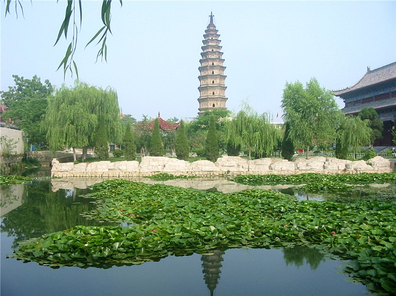
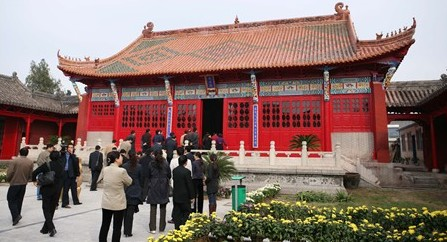
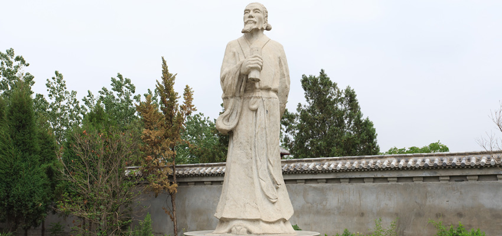
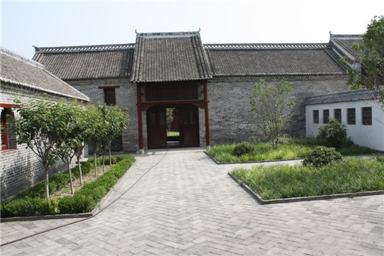
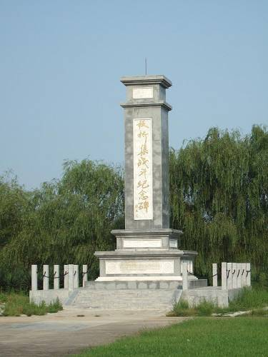
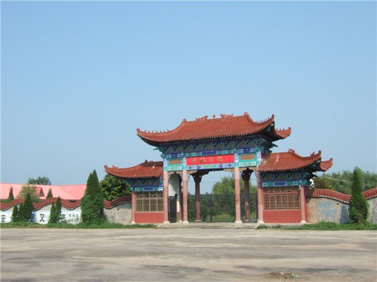

景点名片
万佛塔
等级：国家级重点文物保护单位
又名插花塔、兴化寺塔、慈氏寺塔（因为此处宋代有兴化寺。元代有慈氏寺），俗称“蒙城砖塔”。万佛塔坐落在安徽蒙城城内东南隅，因塔身内外嵌砌琉璃小佛近万躯而得名。此塔为宋代建筑风格，八角十三层楼阁式砖塔，高三十八点六米，底层周长二十四点三米，四周环水，基础以八角形石墙围护，造型优美.。挺拔的塔身和塔身上镶嵌的彩色釉陶佛像倒映在水中，微风拂来，盎然成趣。有人形容这里是“一塘清水万佛影，微波击岸柳成荫”。一九六一年，安徽省人民委员会将此塔公布为全省重点文物保护单位。一九八一年，此塔载入了《中国名胜词典》。2006年万佛塔被国务院核定为全国重点文物保护单位。
尉迟寺遗址
等级：国家级重点文物保护单位
位于安徽省亳州市蒙城县许曈镇毕集村东150米，是5000年前人类文化遗址。该遗址是国内目前保存最为完整规模最大的原始社会新石器晚期聚落遗存，东西长约370米，南北宽约250米，总面积约为10万平方米。相传是纪念唐代大将军尉迟敬德在此屯兵而建，故称“尉迟寺”。遗址中的红烧土排房是我国迄今为止已经发现的最完整、最丰富、规模最大的史前建筑遗存。中国社会科学院考古研究所安徽工作队，从1989年至今，先后进行了13次发掘，在一万平方米的范围内，共清理出房迹78间，墓葬300余座及大量的灰坑、祭祀坑等。尉迟寺遗址被称为“中国原始第一村”。
尉迟寺遗址成为考古界公认的“中国原始第一村”，最重要的原因是在这里首次发现了新石器时代规模最大、规格最高的房屋遗址。这里出土的红烧土房，为当时人类最豪华的住宅。每间房子均由墙体（主墙和隔墙）、房门、室内桩、房顶、居住面、灶址等部分组成，建造时均经过挖槽、立柱、抹泥、烧烤等工序。红烧土房制作工艺复杂，先用粗木和泥土混合物搭建出墙体和屋顶，再用火烘烤，直至整个房屋变成红色。红烧房是原始人烧制的最大最硬的一件陶制品，这样的房屋冬暖夏凉，坚固美观。
蒙城文庙
等级：安徽省重点文物保护单位
又称孔庙，位于安徽省蒙城县周元路，是封建时代祭孔、演礼和办学的地方。文庙自前而后依次为灵星门、泮池、泮桥（以上待建），大成门和大成殿，灵星门正对青去街，取其“平步青云”之意。灵星门的西南侧有一井，名圣井“圣井甘泉”为蒙城八景之一。大成门东连名宦祠，西接乡贤祠。大成殿前两侧有东西配庑，殿东为节孝祠，殿西为忠义祠。东院是文昌阁，西院是明伦堂。
大成殿，原名先帅殿，又称圣人殿，是文庙的主体建筑。殿宽五间，进深三间，为山以顶抬梁式建筑，九檩十八架，四十二檐墩，用巨杉作栋梁，飞檐翘角，蔚为壮观，殿内外上下重油彩绘，雕梁画栋，金碧辉煌，是我们淮北地区最为宏伟、保存最为完整的古建筑。从前，殿内正中供孔子神龛牌位，两旁置颜、曾、孝、悌、忠、信、礼、义廉、耻八个大字。殿上方悬着康熙，乾隆皇帝御书的“万世师表”、“生民未有”“与天地参”三块匾额。殿前阅台高一米余，上有一圈汉白玉栏杆，中间和两旁有石阶供人登临。东西廊房各七间。为灰色筒孔覆顶，车房原供孔子三千弟子，西房原供历代贤孺牌位。大成门又称戟门，面阔五间，是通向大成殿的过道门。在其东面的名宦祠原供苏舜饮，丰稷等在蒙城有政绩的官吏，西面的乡贤祠原供庄子、何惟等地方贤土。
蒙城文庙是淮北地区儒家文化的传播地，发挥了传承中国古代文明、弘扬传统文化的历史作用，对淮北历史文化产生了深远的影响。据县志记载，当地士绅曾多次捐银修建文庙。正是历代蒙城人民对孔子的伟大精神与人格魅力的敬仰，才使文庙保存下来，并成为整个皖北地区保存较为完好的文庙。
庄子祠
等级：国家AAA级旅游景区
位于在安徽省蒙城县县城北漆园办事处。道教庙宇。始建于北宋，宋元丰元年 (1078)，知县王竟创建于涡河北岸漆园城，后被黄河水淹没，明代万历九年(1581)，蒙城知县吴一鸾于今址重建，时有逍遥堂、梦蝶楼、大门、二门、鱼池桥、观鱼台、道舍等建筑，布局严谨，规模宏大；崇祯五年(1632)，知县李时芳重修逍遥堂，增建五花亭并辟池为濠上观鱼园。后历遭兵劫，遂渐颓毁，所存无几。现存庄子祠是蒙城县政府在宋代庄子祠旧址上新建的，总占地面积52亩，总建筑面积1086平方米，全祠由祠堂建筑群与万树园两部分组成。主要建筑有大三门、影壁、山门、逍遥堂、古衡门，濮池、五笑亭、观台、观鱼桥、梦蝶楼、南华经阁、东西碑廊、道舍、客舍等。
马公府
等级：蒙城县重点文物保护单位
马公府坐落在蒙城县马集镇政府西南，系清末抗日爱国将领马玉昆府弟。是目前皖北地区规模较大，保存较为完整的古民居。
马公府座北朝南，两进三个院落，房屋呈“品”字形分布，取“一品当朝”之意。横向三排房屋面阔十间，均有前廊，檐下雕花斜撑，木柱下以石鼓作础石。 第一进院东西厢房各四间。第二进院除东西各四间厢房外，中轴线上纵列一排四间厢房，将后院分成东西两个庭落。岗楼下过道可通马车和太平车。大门门楼在第一排房屋中央，门额悬两块金字匾；上匾横书“一品当朝”，下匾竖书“将军第”。大门两旁各立一尊青石狮子。两根二十余米高的擎天旗杆分立东西。除东厢房于1986年拆除改建外，其余四十二间房屋均为原貌。马公府建筑风格古朴典雅，砖木椎架结构，房梁一般为三层垛梁，在屋檐、房梁之上，存有大量砖雕、木雕，有很高的艺术观赏价值。是皖北地区难得的古民居遗存。
马公府是蒙城县县级重点文物保护单位，存有大量砖雕、木雕，具有很高的历史、科学和艺术价值。蒙城县将把马公府建设成爱国主义教育基地。通过对其内部进行精心布展，大力充实文化内涵，全面展示中国近代史及马玉昆抵御外辱系列事迹，大力弘扬中华民族精神和优秀传统文化。
板桥集战斗纪念馆
等级：国家AAA级旅游景区
板桥集战斗纪念馆是为了纪念板桥集战斗而建，在雪枫公园里面。纪念馆占地13200平方米，建筑面积980平方米，馆内设两个展厅和一个多媒体放映厅，展示100多幅珍贵图片和部分实物，同时收藏了120名将军的题字。板桥集战斗纪念碑占地81平方米，寓意八一建军节，碑高为11.17米，寓意1940年11月17日板桥集战斗打响，碑文由腾海清中将亲笔题写。
1940年11月17日拂晓至18日下午，新四军四师五旅在师长彭雪枫指挥下，与日伪军在板桥集展开了殊死的拼杀，发生了震惊中原的板桥集抗日战斗。整个战斗历时两天零一夜，共击毙日伪军400余人，击毁敌人坦克、汽车19辆，击落日寇“九八”式358号轻型轰炸机一架，取得了辉煌的战果，在新四军战史上留下光辉的一页。
雪枫公园
位于蒙城县板桥集镇，以著名抗日将领、新四军四军师长彭雪枫的名字命名。公园面积60万平米，园区杨柳青青，碧波荡漾，鱼跃荷香，小鸟依依；白玉桥隔开两湖，东湖有岛，岛上有山；西湖有亭，亭壁雕仙；跨过九曲桥，有石桌、石登、石棋盘，可供游客小憩。